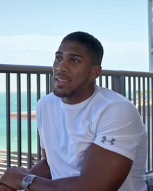

|  | BIOGRAPHY
Real name: Anthony Oluwafemi Olaseni Joshua |
Anthony Oluwafemi Olaseni Joshua OBE (born 15 October 1989) is an English professional boxer. He is a two-time former unified world heavyweight champion, having held the WBA (Super), IBF, WBO, and IBO titles twice between 2016 and 2021. At regional level, he held the British and Commonwealth heavyweight titles from 2015 to 2016.
As an amateur, Joshua represented England at the 2011 World Championships in the super-heavyweight division, winning a silver medal. He also represented Great Britain at the 2012 Olympics, winning gold. In 2014, a year after turning professional, he was named Prospect of the Year by The Ring magazine. In 2017, his victorious fight against Wladimir Klitschko was named Fight of the Year by The Ring and the Boxing Writers Association of America. Joshua is the second English boxer, after James DeGale, to win both a gold medal at the Olympics and a world title by a major professional sanctioning body, as well as the first English heavyweight to do so.As of October 2022, Joshua is ranked as the world's second-best active heavyweight by BoxRec,[2] third by The Ring,[3] and fourth by Transnational Boxing Rankings Board[4] and ESPN,[5] as well as the sixth-best active boxer, pound for pound, by BoxRec.[6] He has been ranked by BoxRec as among the world's top 10 heavyweights since 2014, and was ranked at No. 1 at the conclusion of 2016 and 2017.[7] Joshua's knockout-to-win percentage stands at 91.67%, with an overall knockout percentage of 63.64% in world heavyweight